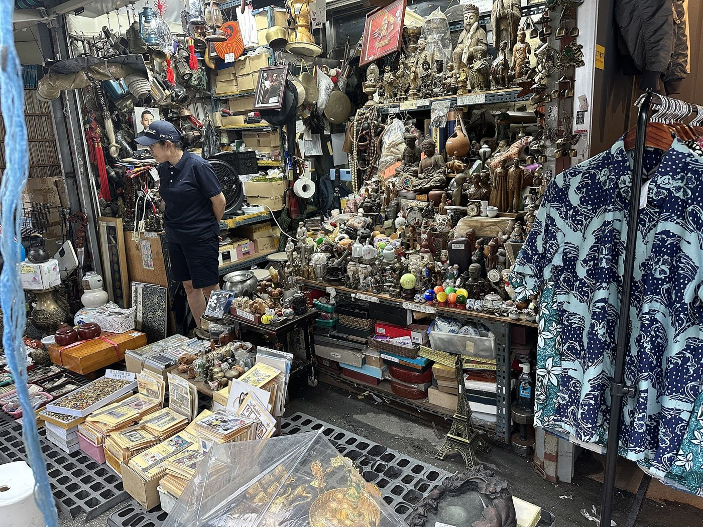
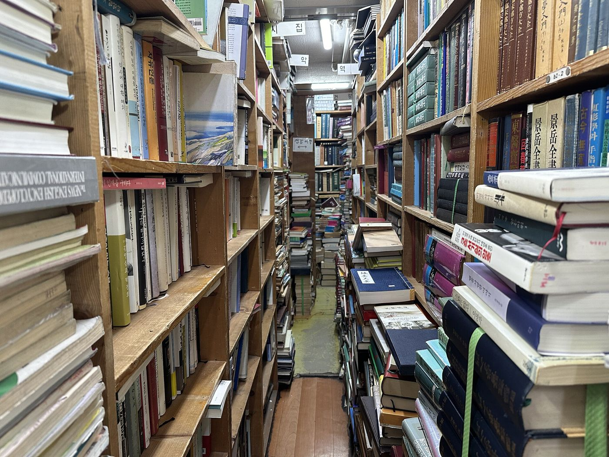

BRIDGE
Hwanghak-dong · Sindang
Neighbourhood
Studios
Before you fly
Getting here
Eat
EN

Vintage hunting and late-night groceries, right outside.

Google Maps
Naver Map
서울특별시 중구 난계로17길 58-13
브릿지 (황학동)
58-13 Nangye-ro 17-gil, Jung-gu, Seoul